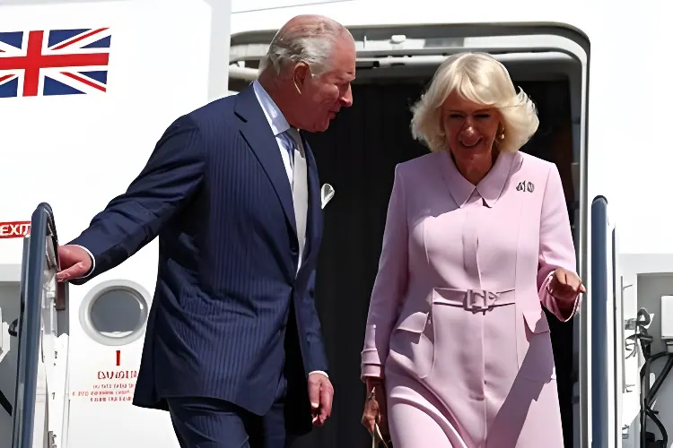

Du 27 au 30 avril 2026, le roi Charles III et la reine Camilla effectuent la première visite d'État d'un souverain britannique aux États-Unis depuis dix-neuf ans. Accueillis par Donald Trump sur fond de tensions transatlantiques liées à la guerre en Iran et au soutien à l'Ukraine, les souverains accomplissent une mission délicate : raviver la « relation spéciale » sans compromettre la neutralité constitutionnelle de la Couronne. Un périple de quatre jours — Washington, New York, Virginie — qui s'inscrit dans le cadre des 250 ans de l'indépendance américaine et révèle toute la complexité de la diplomatie royale à l'ère Trump.
La visite d'État de Charles III aux États-Unis, du 27 au 30 avril 2026, est la première d'un monarque britannique depuis celle d'Élisabeth II en mai 2007, sous la présidence de George W. Bush. Elle se tient dans un contexte de tensions sérieuses entre Londres et Washington : le Premier ministre Keir Starmer a refusé d'autoriser les bases britanniques lors des premières frappes américano-israéliennes sur l'Iran en février 2026, provoquant la colère de Donald Trump. Plusieurs députés britanniques avaient même demandé l'annulation du voyage.
Buckingham Palace a maintenu le déplacement « comme prévu », estimant que la visite constituait une opportunité de dialoguer. L'éditeur royal de l'ITV, Chris Ship, l'a qualifiée de « déplacement diplomatique le plus risqué du règne de Charles III ». La visite coïncide également avec le 250e anniversaire de la Déclaration d'indépendance américaine — événement d'autant plus symbolique que Charles III est le descendant direct du roi George III contre lequel les colonies se soulevèrent en 1776.
Atterrissage à la base aérienne de Joint Base Andrews. Accueil à la Maison-Blanche par Donald et Melania Trump au portique sud. Thé privé dans le Salon Vert, visite du nouveau rucher de la Pelouse Sud — clin d'œil à la passion du roi pour l'apiculture. Réception en soirée à la résidence de l'ambassadeur britannique.
Cérémonie d'État sur la Pelouse Sud. Entretien privé dans le Bureau Ovale. Discours historique devant une session conjointe du Congrès américain — Charles III est seulement le deuxième souverain britannique à s'y exprimer, après Élisabeth II en 1991. Dîner d'État à la Maison-Blanche en soirée.
Déplacement à New York : visite du Mémorial du 11-Septembre, événement commercial britanno-américain, réception littéraire de la reine Camilla à la New York Public Library en présence de Sarah Jessica Parker et Anna Wintour. Gala du King's Trust au Rockefeller Center en soirée, avec Lionel Richie et Charlotte Tilbury.
Arlington National Cemetery : dépôt de gerbe sur la tombe du Soldat inconnu, salve de 21 coups de canon. Visite du parc national de Shenandoah en Virginie. Potluck communautaire à Front Royal avec le gouverneur Abigail Spanberger pour célébrer les 250 ans des États-Unis. Puis départ seul de Charles pour les Bermudes.
Le point d'orgue de la visite est sans conteste le discours prononcé par Charles III devant une session conjointe du Congrès américain le 28 avril. Ovationné debout, le roi a livré un message subtilement politique depuis la tribune de l'hémicycle, en présence du vice-président JD Vance et du Speaker Mike Johnson — mais en l'absence de Donald Trump.
Dans un registre plus léger mais tout aussi politique, lors du dîner d'État du soir, Charles III a piqué Trump avec humour en déclarant que, sans la colonisation britannique de l'Amérique du Nord, ses hôtes « parleraient français ». Une réponse élégante aux propos tenus par Trump à Davos en janvier 2026, affirmant que sans les États-Unis, les Européens « parleraient allemand ». Trump a réagi en postant « DEUX ROIS » sur Truth Social.
« Le lien de parenté et d'identité qui unit les États-Unis et le Royaume-Uni est inestimable et éternel. Il est irremplaçable et indestructible. »
— Charles III, devant le Congrès américain, 28 avril 2026« Les défis auxquels nous sommes confrontés sont trop grands pour qu'une nation puisse les affronter seule. »
— Charles III, session conjointe du Congrès, 28 avril 2026La visite a été unanimement saluée comme un succès de communication. Trump a dit de son entretien au Bureau Ovale que c'était « une très bonne réunion » avec « une personne fantastique ». Il a ajouté que son affection pour le roi l'aidait probablement à améliorer ses relations avec le Premier ministre Starmer. Le roi a offert à Trump la cloche du HMS Trump, un sous-marin britannique de 1944, soulignant l'histoire militaire commune.
Cependant, les limites de l'exercice sont claires : plus de la moitié des Britanniques estiment selon les sondages que cette visite ne suffira pas à réchauffer les relations entre les deux pays. Le dossier iranien, les désaccords sur l'Ukraine, la question de l'Epstein — évoquée lors d'auditions au Comité de surveillance de la Chambre des représentants concernant le frère du roi, le prince Andrew — et les critiques de l'ambassadeur Turner sur la « relation spéciale » révélées par le Financial Times démontrent que les tensions structurelles demeurent.
| Étape | Événement principal | Enjeu |
|---|---|---|
| Maison-Blanche (28/04) | Discours au Congrès | Réaffirmation des valeurs communes |
| Dîner d'État (28/04) | Réplique humoristique à Trump | Soft power et équilibre rhétorique |
| New York (29/04) | Mémorial du 11-Sept. / King's Trust | Solidarité & engagement philanthropique |
| Arlington (30/04) | Tombe du Soldat inconnu | Mémoire militaire partagée |
La visite d'État de Charles III aux États-Unis illustre la singularité de la diplomatie royale britannique : sans pouvoir exécutif, le monarque incarne néanmoins une continuité et une légitimité symbolique que les gouvernements élus ne peuvent reproduire. Dans un contexte de tensions inédites entre Londres et Washington depuis l'élection de Trump, le roi a su naviguer entre loyauté envers ses ministres, attachement aux valeurs démocratiques et sens de l'humour britannique — rappelant que la « relation spéciale » est autant affaire de culture et d'histoire que de politique. Ce voyage restera l'un des actes diplomatiques majeurs de son règne, à une époque où le Commonwealth et l'alliance atlantique sont en pleine redéfinition.
From 27 to 30 April 2026, King Charles III and Queen Camilla undertook the first state visit by a British monarch to the United States in nineteen years. Welcomed by Donald Trump against a backdrop of transatlantic tensions over the Iran war and support for Ukraine, the royal couple faced a delicate mission: to revive the "Special Relationship" without compromising the Crown's constitutional neutrality. A four-day tour — Washington, New York, Virginia — framed by the 250th anniversary of American independence, that laid bare the full complexity of royal diplomacy in the Trump era.
King Charles III's state visit to the United States from 27 to 30 April 2026 is the first by a British monarch since Queen Elizabeth II's trip in May 2007, hosted by President George W. Bush. It takes place against a backdrop of serious tensions between London and Washington: Prime Minister Keir Starmer refused to allow US forces access to British bases during the opening American-Israeli strikes on Iran in February 2026, provoking Donald Trump's fury. Several British MPs had called for the trip to be cancelled.
Buckingham Palace maintained the visit would proceed "as planned", arguing it offered an opportunity for dialogue. ITV's royal editor Chris Ship described it as "the most diplomatically risky trip of Charles III's reign so far". The visit also coincides with the 250th anniversary of the Declaration of Independence — all the more symbolic given that Charles III is the direct descendant of King George III, against whose rule the American colonies rebelled in 1776.
Landing at Joint Base Andrews. Welcome at the White House by Donald and Melania Trump at the South Portico. Private tea in the Green Room, tour of the newly expanded beehive on the South Lawn — a nod to the King's passion for beekeeping. Evening reception at the British Ambassador's residence.
State arrival ceremony on the South Lawn. Private meeting in the Oval Office. Historic address to a joint session of Congress — Charles III is only the second British sovereign ever to do so, after Elizabeth II in 1991. White House state dinner in the evening.
New York: visit to the 9/11 Memorial, UK-US trade event, literary reception hosted by Queen Camilla at the New York Public Library attended by Sarah Jessica Parker and Anna Wintour. Evening King's Trust Global Gala at Rockefeller Center with Lionel Richie and Charlotte Tilbury.
Arlington National Cemetery: wreath-laying at the Tomb of the Unknown Soldier, 21-gun salute. Visit to Shenandoah National Park, Virginia. Community potluck in Front Royal with Governor Abigail Spanberger to mark America's 250th anniversary. Charles then travels alone to Bermuda for a royal visit.
The undisputed centrepiece of the visit was Charles III's address to a joint session of Congress on 28 April. Greeted with a standing ovation, the King delivered a subtly political speech from the chamber's podium, in the presence of Vice President JD Vance and Speaker Mike Johnson — but in the absence of Donald Trump.
In a lighter but equally pointed register, at the state dinner that evening, Charles III landed a barb at Trump's expense by remarking that, without British colonisation of North America, his hosts would "be speaking French". An elegant riposte to Trump's comment at Davos in January 2026, that without American support in the Second World War, Europeans would "be speaking German". Trump responded by posting "TWO KINGS" on Truth Social.
"The bond of kinship and identity that unites the United States and the United Kingdom is priceless and eternal. It is irreplaceable and indestructible."
— Charles III, address to the US Congress, 28 April 2026"The challenges we face are too great for any one nation to confront alone."
— Charles III, joint session of Congress, 28 April 2026The visit was universally praised as a communications success. Trump described their Oval Office meeting as "a very good meeting" with "a fantastic person", and suggested that his warm feelings for the King probably helped his relationship with Prime Minister Starmer. As a gift, the King presented Trump with the bell of HMS Trump, a British submarine commissioned in 1944, symbolising the two nations' shared military history.
Yet the limits of the exercise are plain: polls suggest more than half of Britons believe the visit will not be enough to warm relations between the two countries. The Iran file, disagreements over Ukraine, the Epstein affair — raised in hearings by the House Oversight Committee concerning the King's brother Prince Andrew — and Ambassador Turner's critical remarks about the "Special Relationship", leaked to the Financial Times, all demonstrate that structural tensions remain very much alive.
| Stop | Key event | Stakes |
|---|---|---|
| White House (28/04) | Address to Congress | Reaffirming shared values |
| State dinner (28/04) | Witty riposte to Trump | Soft power & rhetorical balance |
| New York (29/04) | 9/11 Memorial / King's Trust | Solidarity & philanthropy |
| Arlington (30/04) | Tomb of the Unknown Soldier | Shared military memory |
Charles III's state visit to the United States illustrates the singular nature of British royal diplomacy: without executive power, the monarch nonetheless embodies a continuity and symbolic legitimacy that elected governments cannot replicate. In a context of unprecedented tensions between London and Washington since Trump's election, the King navigated with skill between loyalty to his ministers, commitment to democratic values and quintessentially British wit — reminding all that the "Special Relationship" is as much a matter of culture and history as of politics. This journey will stand as one of the defining diplomatic acts of his reign, at a time when both the Commonwealth and the Atlantic alliance are undergoing profound redefinition.